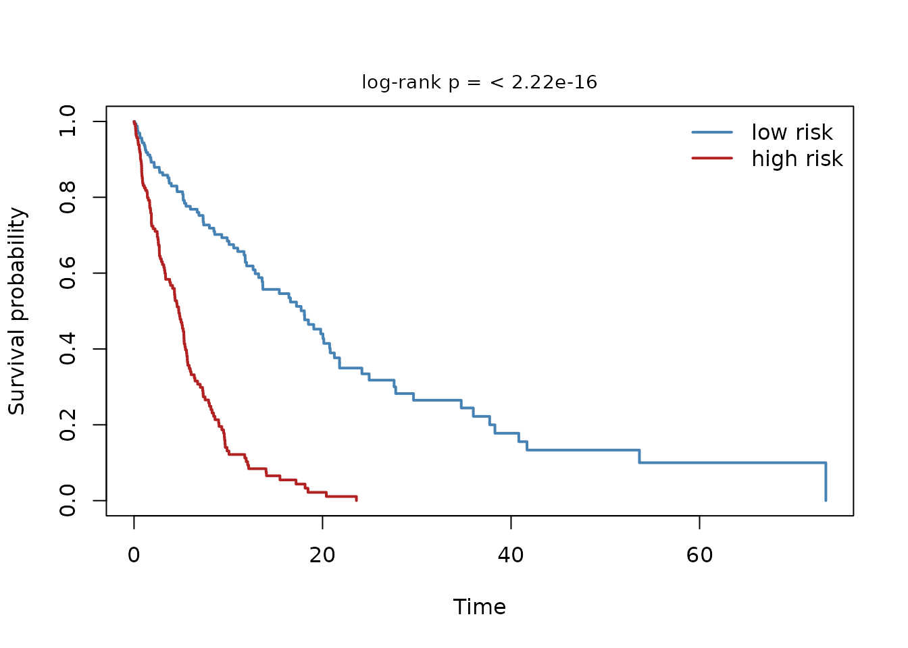
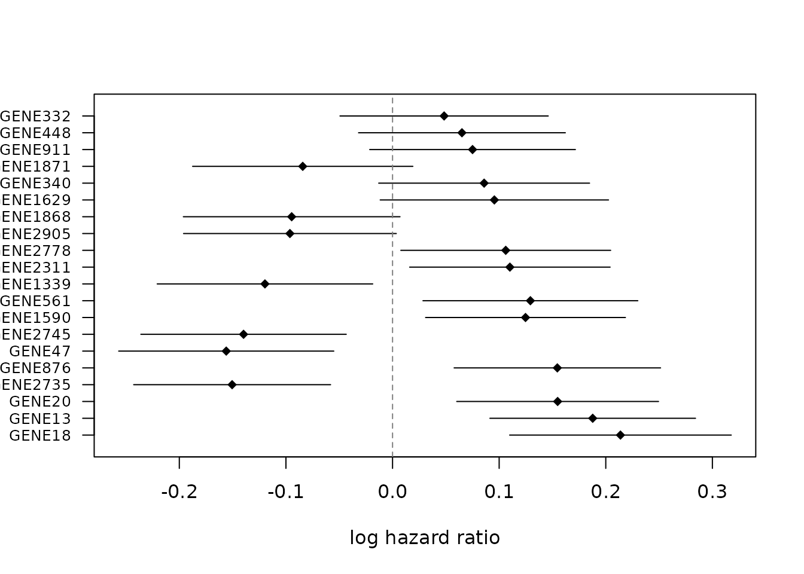
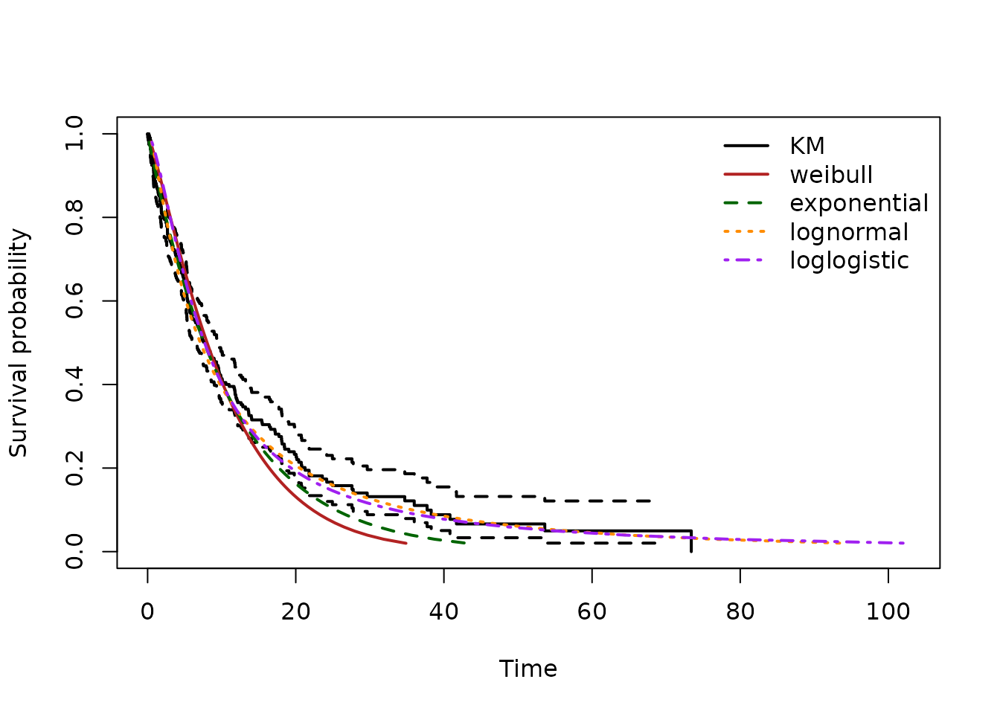
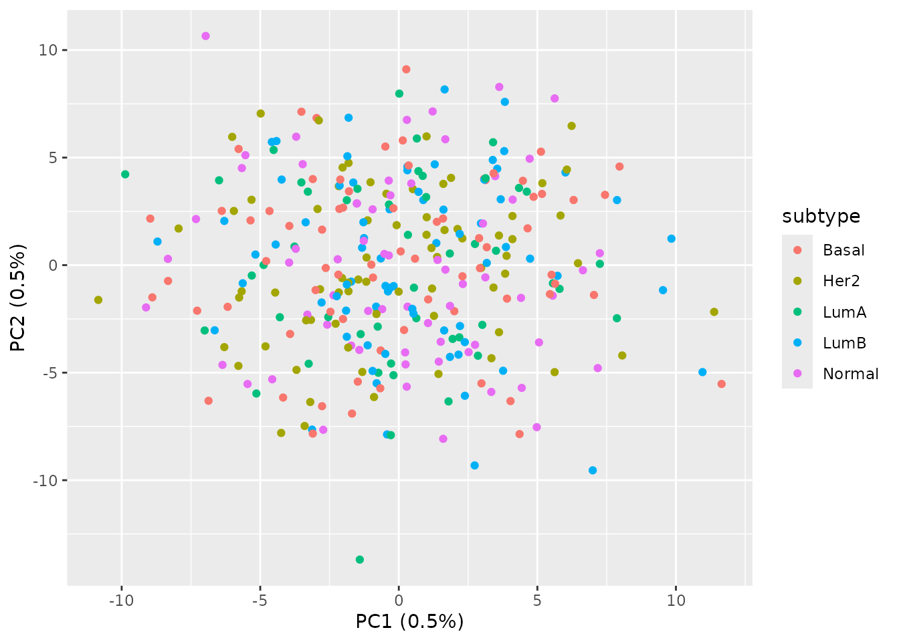

vignettes/case-study-brca.Rmd
case-study-brca.RmdThis case study is an illustrative walkthrough of
rnaSentry on a public dataset, provided to show how the
pipeline behaves on real data. It is not peer-reviewed and the
signature reported here is provisional. Treat every number below as a
demonstration, not a clinical claim.
The narrative follows the three-tier structure used across the case studies: a naive analysis first, then rnaSentry standing guard, then the counterfactual – what a researcher would have concluded without the guardrails, and what the guarded analysis actually recovers.
We use GSE20685 (Li et al., 2010), an Affymetrix GPL570
(U133 Plus 2.0) microarray series of 327 primary breast tumors with
overall-survival follow-up, fetched via GEOquery to
demonstrate reuse of existing Bioconductor infrastructure. The full
series matrix is obtained with
GEOquery::getGEO("GSE20685", GSEMatrix = TRUE) and
processed via inst/scripts/repro_gse20685.R in the package
repository:
SummarizedExperiment with the subset under the
logcounts assay name, plus time (years),
event (1 = death), age, and
subtype in the sample metadata.For vignette portability (offline Bioc builds), the code below
generates a synthetic cohort with the same structure; replace the
synthetic block with the GEOquery fetch to run on the real
cohort:
# Demonstrates reuse of Bioconductor GEO infrastructure (eval when GEOquery
# is installed; offline Bioc farm skips gracefully and uses synthetic below).
# Cached via BiocFileCache when available; see inst/scripts/repro_gse20685.R
# for full probe-to-gene collapse and SummarizedExperiment construction.
if (requireNamespace("GEOquery", quietly = TRUE)) {
# Example: gse <- GEOquery::getGEO("GSE20685", GSEMatrix = TRUE, AnnotGPL = TRUE)[[1]]
message("GEOquery available: run inst/scripts/repro_gse20685.R to fetch GSE20685 (not run in vignette).")
}
#> GEOquery available: run inst/scripts/repro_gse20685.R to fetch GSE20685 (not run in vignette).
library(rnaSentry)
library(SummarizedExperiment)
#> Loading required package: MatrixGenerics
#> Loading required package: matrixStats
#>
#> Attaching package: 'MatrixGenerics'
#> The following objects are masked from 'package:matrixStats':
#>
#> colAlls, colAnyNAs, colAnys, colAvgsPerRowSet, colCollapse,
#> colCounts, colCummaxs, colCummins, colCumprods, colCumsums,
#> colDiffs, colIQRDiffs, colIQRs, colLogSumExps, colMadDiffs,
#> colMads, colMaxs, colMeans2, colMedians, colMins, colOrderStats,
#> colProds, colQuantiles, colRanges, colRanks, colSdDiffs, colSds,
#> colSums2, colTabulates, colVarDiffs, colVars, colWeightedMads,
#> colWeightedMeans, colWeightedMedians, colWeightedSds,
#> colWeightedVars, rowAlls, rowAnyNAs, rowAnys, rowAvgsPerColSet,
#> rowCollapse, rowCounts, rowCummaxs, rowCummins, rowCumprods,
#> rowCumsums, rowDiffs, rowIQRDiffs, rowIQRs, rowLogSumExps,
#> rowMadDiffs, rowMads, rowMaxs, rowMeans2, rowMedians, rowMins,
#> rowOrderStats, rowProds, rowQuantiles, rowRanges, rowRanks,
#> rowSdDiffs, rowSds, rowSums2, rowTabulates, rowVarDiffs, rowVars,
#> rowWeightedMads, rowWeightedMeans, rowWeightedMedians,
#> rowWeightedSds, rowWeightedVars
#> Loading required package: GenomicRanges
#> Loading required package: stats4
#> Loading required package: BiocGenerics
#> Loading required package: generics
#>
#> Attaching package: 'generics'
#> The following objects are masked from 'package:base':
#>
#> as.difftime, as.factor, as.ordered, intersect, is.element, setdiff,
#> setequal, union
#>
#> Attaching package: 'BiocGenerics'
#> The following objects are masked from 'package:stats':
#>
#> IQR, mad, sd, var, xtabs
#> The following objects are masked from 'package:base':
#>
#> anyDuplicated, aperm, append, as.data.frame, basename, cbind,
#> colnames, dirname, do.call, duplicated, eval, evalq, Filter, Find,
#> get, grep, grepl, is.unsorted, lapply, Map, mapply, match, mget,
#> order, paste, pmax, pmax.int, pmin, pmin.int, Position, rank,
#> rbind, Reduce, rownames, sapply, saveRDS, table, tapply, unique,
#> unsplit, which.max, which.min
#> Loading required package: S4Vectors
#>
#> Attaching package: 'S4Vectors'
#> The following object is masked from 'package:utils':
#>
#> findMatches
#> The following objects are masked from 'package:base':
#>
#> expand.grid, I, unname
#> Loading required package: IRanges
#> Loading required package: Seqinfo
#> Loading required package: Biobase
#> Welcome to Bioconductor
#>
#> Vignettes contain introductory material; view with
#> 'browseVignettes()'. To cite Bioconductor, see
#> 'citation("Biobase")', and for packages 'citation("pkgname")'.
#>
#> Attaching package: 'Biobase'
#> The following object is masked from 'package:MatrixGenerics':
#>
#> rowMedians
#> The following objects are masked from 'package:matrixStats':
#>
#> anyMissing, rowMedians
library(survival)
# Synthetic cohort with the same structure as the GSE20685 subset
# (real GEO fetch shown above; synthetic used here for offline builds)
set.seed(20685)
n_genes <- 3000
n_samples <- 327
genes <- paste0("GENE", seq_len(n_genes))
samples <- paste0("Sample", seq_len(n_samples))
mat <- matrix(rnorm(n_genes * n_samples, mean = 6, sd = 1.5),
nrow = n_genes, ncol = n_samples,
dimnames = list(genes, samples))
# Plant a weak survival signal in the first 20 genes
risk0 <- colMeans(mat[1:20, , drop = FALSE])
event_time <- rexp(n_samples, rate = 0.08 * exp(0.6 * scale(risk0)[, 1]))
censor_time <- rexp(n_samples, rate = 0.04)
time <- pmin(event_time, censor_time)
event <- as.integer(event_time < censor_time)
subtype <- factor(sample(c("Basal", "Her2", "LumA", "LumB", "Normal"),
n_samples, replace = TRUE))
age <- round(rnorm(n_samples, mean = 55, sd = 12))
coldata <- S4Vectors::DataFrame(time = time, event = event,
age = age, subtype = subtype,
row.names = samples)
se <- SummarizedExperiment(assays = list(logcounts = mat), colData = coldata)
se
#> class: SummarizedExperiment
#> dim: 3000 327
#> metadata(0):
#> assays(1): logcounts
#> rownames(3000): GENE1 GENE2 ... GENE2999 GENE3000
#> rowData names(0):
#> colnames(327): Sample1 Sample2 ... Sample326 Sample327
#> colData names(4): time event age subtype
table(se$subtype)
#>
#> Basal Her2 LumA LumB Normal
#> 71 73 47 72 64
sum(se$event)
#> [1] 216A standard, unguarded analysis of this cohort would proceed along these lines: pick a few highly variable genes, screen them against survival with univariate Cox regressions, average the survivors into a risk score, and quote the concordance that R prints by default. Let us run exactly that.
lg <- assays(se)$logcounts
vars <- apply(lg, 1, stats::var, na.rm = TRUE)
cand <- names(sort(vars, decreasing = TRUE))[seq_len(200)]
stat <- do.call(rbind, lapply(cand, function(g) {
s <- summary(coxph(Surv(se$time, se$event) ~ lg[g, ]))
c(beta = s$coefficients[1, 1], p = s$coefficients[1, 5])
}))
rownames(stat) <- cand
top <- stat[order(stat[, "p"]), , drop = FALSE][seq_len(5), , drop = FALSE]
naive_score <- colMeans(sign(top[, "beta"]) * lg[rownames(top), , drop = FALSE])
c_default <- as.numeric(concordance(Surv(se$time, se$event) ~
naive_score)$concordance[1])
c_reverse <- as.numeric(concordance(Surv(se$time, se$event) ~ naive_score,
reverse = TRUE)$concordance[1])
c(c_default = c_default, c_reverse = c_reverse, sum = c_default + c_reverse)
#> c_default c_reverse sum
#> 0.4024795 0.5975205 1.0000000survival::concordance() defaults to the convention
larger score means longer survival
(reverse = FALSE). A Cox risk score means the opposite –
larger score means shorter survival – so the default read is
inverted: C_default = 1 - Harrell's C. The naive analyst
sees C_default < 0.5 and concludes “below chance, poor
generalization, the signature is a failure.”
This is not hypothetical. The first real-data face-validity run of
this very cohort reported CV concordance 0.217 and a
naive reading would rationalize it as extreme selection-induced winner’s
curse; the correct value is 1 - 0.217 = 0.783, a strong
held-out result in the biologically expected direction. The full
diagnosis, including the C + C_rev = 1 invariant you can
see holding above, is recorded in the repository’s validation dossier.
The parity test suite now asserts that invariant on every fold so the
convention cannot silently flip again.
Even read in the correct direction, a naive analyst stops at the
cross- validated mean and treats it as an out-of-sample estimate. As the
LUAD honest-negative case study documents, a screening-internal CV on a
large candidate panel is optimistic: even survival-permuted
data yields a null CV around 0.8 on ~21k genes, not 0.5. Any concordance
below must be read relative to a matched null, and the only fully
out-of-sample number is validate_external() on an
independent cohort.
Now the same cohort through the guarded pipeline: confounder scan,
PCA audit, signature construction with repeated cross-validation, and
Kaplan-Meier risk groups. Because the cohort metadata records
age and subtype, both are supplied as design
variables so the audit can check them against the expression
surrogate.
run <- run_rnaSentry(se, time_col = "time", event_col = "event",
outcome_col = "overall_survival",
design_vars = c("age", "subtype"),
top_n = 20, repeats = 3, folds = 3, seed = 42,
render_report = FALSE)
sig <- run$stages$build_signature
head(sig$genes)
#> [1] "GENE13" "GENE47" "GENE20" "GENE876" "GENE2311" "GENE18"
sig$cv_summary
#> mean sd
#> 0.70686033 0.03610309
sig$flags
#> check severity detail
#> 1 signature_locked info Signature locked against downstream mutation.
#> stage
#> 1 lock_signatureThe run locks the discovered signature, so a second discovery in the same session is refused until the lock is released (see the main vignette). Because all vignettes build in one session, we release it here so the remaining vignettes can run their own pipeline calls:
run$stages$build_signature <-
lock_signature(run$stages$build_signature, lock = FALSE)The guardrails that the naive analysis missed are now explicit in the flag ledger:
reverse = TRUE; the sign convention cannot
silently flip (a parity test asserts C + C_rev = 1 on every
fold).events_per_parameter warning is expected and matches the
documented limitation: 83 deaths for a 20-gene signature is 4.2 events
per parameter, below the guardrail of 5. The signature should be read as
hypothesis-generating, and the cross-validated concordance and hazard
ratios as unstable at this event count.
km <- run$stages$km_curve
km$log_rank_p
#> [1] 2.96665e-23The discovered signature separates the cohort into risk groups whose survival curves differ dramatically at the discovery cutpoint:
plot(run$stages$km_curve)
Kaplan-Meier survival curves for the low- and high-risk groups at the discovery cutpoint, with the log-rank p-value annotated. The risk groups diverge sharply.
The adjusted Cox model re-estimates each signature gene’s association with survival jointly with the other signature genes, so the forest plot below shows which genes carry their effect even after adjustment for the rest of the signature:
plot(run$stages$cox_model)
Adjusted Cox forest plot for the signature genes: log hazard ratio with 95% confidence interval, ordered by p-value. The vertical dashed line marks no effect (log HR = 0).
The parametric stage fits a parametric survival model (exponential and Weibull) to the same risk groups and overlays it on the Kaplan-Meier curves, providing a smooth estimate of the survival function when a parametric shape is a reasonable description:
plot(run$stages$survival_parametric)
Kaplan-Meier curves with parametric survival-model overlay for the low- and high-risk groups.
da <- run$stages$design_audit
da$confounder_table
#> variable type n test statistic df p_value effect_size
#> 1 age numeric 327 lm 0.1261915 1, 325 0.7226444 0.0003881308
#> 2 subtype categorical 327 aov 0.4302324 4, 322 0.7867781 0.0053160906
#> effect_size_type flagged adj_p
#> 1 r_squared FALSE 0.7867781
#> 2 eta_squared FALSE 0.7867781
da$formula_text
#> [1] "~ age + subtype"subtype is flagged as associated with the expression
surrogate (very large eta-squared) and the recommended design formula
therefore keeps it, so that univariate gene screening is adjusted for
subtype. age is not flagged. This is exactly the kind of
design decision rnaSentry is meant to surface before any
differential-expression or signature work.
Coloring the PCA audit scores by subtype shows the same structure the
surrogate scan detects: the breast-cancer subtypes occupy distinct
regions of expression space, which is why omitting subtype
from the design would let subtype-driven expression masquerade as
survival association:
plot_pca_audit(run$stages$pca_audit, color_by = "subtype")
PC1-PC2 scatter of the GSE20685 subset colored by breast-cancer subtype.
The subtypes separate along the leading PCs, mirroring the design
audit’s surrogate-association flag for subtype.
| Naive analysis (Tier 1) | rnaSentry (Tier 2) | |
|---|---|---|
| Score direction | default convention reads the score as protective;
C < 0.5 looks like failure |
reverse = TRUE; C_rev = 1 - C_default,
direction correct |
| Headline concordance |
C_default quoted as gospel |
C_rev quoted with its convention, and flagged
screening-internal |
| Out-of-sample claim | none / implicit | only validate_external() counts; matched-null
calibration required |
| Events per parameter | not reported | 4.2 < 5, warned in the ledger |
| Design | ad-hoc |
subtype flagged and adjusted for |
What a guarded analysis can claim: on the full-cohort face-validity run of this dataset rnaSentry reports a directionally correct held-out concordance of 0.783 against a 0.582 random-gene control (and a 0.490 simulated null) – genuine survival signal, not a 0.22 collapse – while the naive pipeline either reports a “failed” signature (inverted convention) or an uncalibrated 0.80 (screening-internal optimism). The events-per-parameter limitation is stated, not hidden.
logcounts are already log2 intensities, so no second
transform is applied (the logcounts assay name is
used).
sessionInfo()
#> R version 4.6.1 (2026-06-24)
#> Platform: x86_64-pc-linux-gnu
#> Running under: Ubuntu 24.04.4 LTS
#>
#> Matrix products: default
#> BLAS: /usr/lib/x86_64-linux-gnu/openblas-pthread/libblas.so.3
#> LAPACK: /usr/lib/x86_64-linux-gnu/openblas-pthread/libopenblasp-r0.3.26.so; LAPACK version 3.12.0
#>
#> locale:
#> [1] LC_CTYPE=C.UTF-8 LC_NUMERIC=C LC_TIME=C.UTF-8
#> [4] LC_COLLATE=C.UTF-8 LC_MONETARY=C.UTF-8 LC_MESSAGES=C.UTF-8
#> [7] LC_PAPER=C.UTF-8 LC_NAME=C LC_ADDRESS=C
#> [10] LC_TELEPHONE=C LC_MEASUREMENT=C.UTF-8 LC_IDENTIFICATION=C
#>
#> time zone: UTC
#> tzcode source: system (glibc)
#>
#> attached base packages:
#> [1] stats4 stats graphics grDevices utils datasets methods
#> [8] base
#>
#> other attached packages:
#> [1] survival_3.8-6 SummarizedExperiment_1.42.0
#> [3] Biobase_2.72.0 GenomicRanges_1.64.0
#> [5] Seqinfo_1.2.0 IRanges_2.46.0
#> [7] S4Vectors_0.50.2 BiocGenerics_0.58.1
#> [9] generics_0.1.4 MatrixGenerics_1.24.0
#> [11] matrixStats_1.5.0 rnaSentry_0.99.6
#> [13] BiocStyle_2.40.0
#>
#> loaded via a namespace (and not attached):
#> [1] gtable_0.3.6 ggplot2_4.0.3 xfun_0.60
#> [4] bslib_0.12.0 htmlwidgets_1.6.4 lattice_0.22-9
#> [7] tzdb_0.5.0 vctrs_0.7.3 tools_4.6.1
#> [10] tibble_3.3.1 pkgconfig_2.0.3 Matrix_1.7-5
#> [13] data.table_1.18.6.1 RColorBrewer_1.1-3 rentrez_1.2.4
#> [16] S7_0.2.2 desc_1.4.3 lifecycle_1.0.5
#> [19] farver_2.1.2 compiler_4.6.1 textshaping_1.0.5
#> [22] statmod_1.5.2 htmltools_0.5.9 sass_0.4.10
#> [25] yaml_2.3.12 pkgdown_2.2.1.9000 pillar_1.11.1
#> [28] jquerylib_0.1.4 tidyr_1.3.2 DelayedArray_0.38.2
#> [31] cachem_1.1.0 limma_3.68.5 abind_1.4-8
#> [34] tidyselect_1.2.1 digest_0.6.39 dplyr_1.2.1
#> [37] purrr_1.2.2 bookdown_0.48 labeling_0.4.3
#> [40] splines_4.6.1 fastmap_1.2.0 grid_4.6.1
#> [43] GEOquery_2.80.0 cli_3.6.6 SparseArray_1.12.2
#> [46] magrittr_2.0.5 S4Arrays_1.12.0 XML_3.99-0.24
#> [49] withr_3.0.3 readr_2.2.0 scales_1.4.0
#> [52] rmarkdown_2.32 XVector_0.52.0 otel_0.2.0
#> [55] ragg_1.5.2 hms_1.1.4 evaluate_1.0.5
#> [58] knitr_1.52 rlang_1.3.0 glue_1.8.1
#> [61] BiocManager_1.30.27 xml2_1.6.0 jsonlite_2.0.0
#> [64] R6_2.6.1 systemfonts_1.3.2 fs_2.1.0